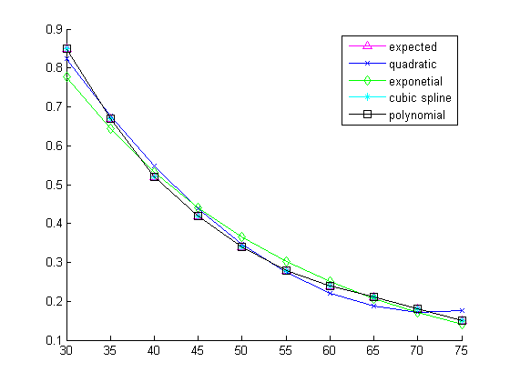
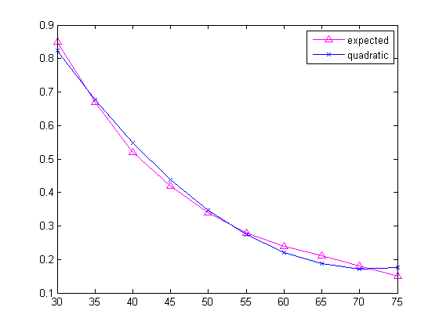
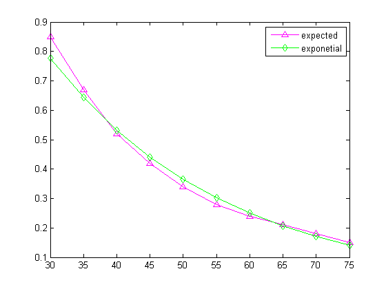
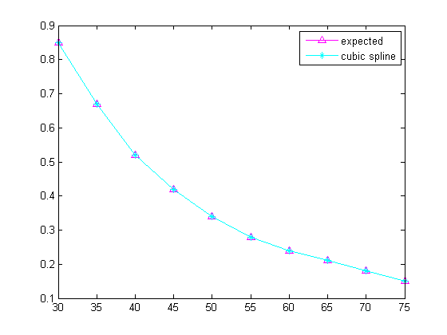
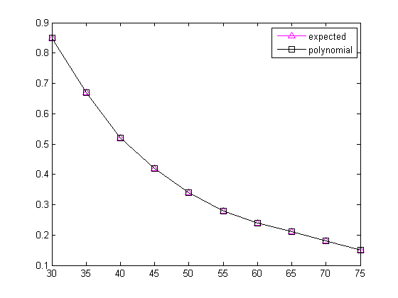

d = [30 35 40 45 50 55 60 65 70 75];
i = [0.85 0.67 0.52 0.42 0.34 0.28 0.24 0.21 0.18 0.15];
len = length(d);
soln_A = BestFitNOrder(d, i, 2);
a0 = soln_A(1);
a1 = soln_A(2);
a2 = soln_A(3);
for j=1:length(d)
fxa(j) = a2*d(j)^2 + a1*d(j) + a0;
end
soln_B = BestFitExp(d, i);
b0 = soln_B(1);
b1 = soln_B(2);
B = exp(b0);
for j=1:length(d)
fxb(j) = B*exp(b1*d(j));
end
cc = InterpN2(d,i);
fcf = strcat('cc(1)'...
,'+cc(2)*(x-30)'...
,'+cc(3)*(x-30)*(x-35)'...
,'+cc(4)*(x-30)*(x-35)*(x-40)'...
,'+cc(5)*(x-30)*(x-35)*(x-40)*(x-45)'...
,'+cc(6)*(x-30)*(x-35)*(x-40)*(x-45)*(x-50)'...
,'+cc(7)*(x-30)*(x-35)*(x-40)*(x-45)*(x-50)*(x-55)'...
,'+cc(8)*(x-30)*(x-35)*(x-40)*(x-45)*(x-50)*(x-55)*(x-60)'...
,'+cc(9)*(x-30)*(x-35)*(x-40)*(x-45)*(x-50)*(x-55)*(x-60)*(x-65)'...
,'+cc(10)*(x-30)*(x-35)*(x-40)*(x-45)*(x-50)*(x-55)*(x-60)*(x-65)*(x-70)');
fcy = [];
for j=1:len
fcy(j) = eval(strrep(fcf, 'x', num2str(d(j))));
end
[D, Dxs, DcubicY, dc] = CubicSpline(d, i);
hold on
plot(d, i, '-m^')
plot(d,fxa, '-bx')
plot(d, fxb, '-gd')
plot(d, DcubicY, '-c*')
plot(d, fcy, '-ks');
legend('expected', 'quadratic', 'exponetial', 'cubic spline', 'polynomial')
hold off
figure
plot(d, i, '-m^', d, fxa, '-bx')
legend('expected', 'quadratic')
figure
plot(d, i, '-m^', d, fxb, '-gd')
legend('expected', 'exponetial')
figure
plot(d, i, '-m^', d, DcubicY, '-c*')
legend('expected', 'cubic spline')
figure
plot(d, i, '-m^', d, fcy, '-ks');
legend('expected', 'polynomial')
    